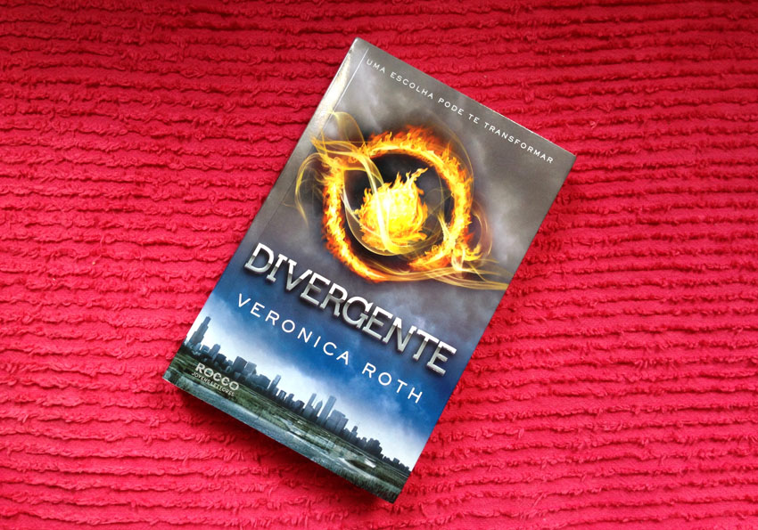
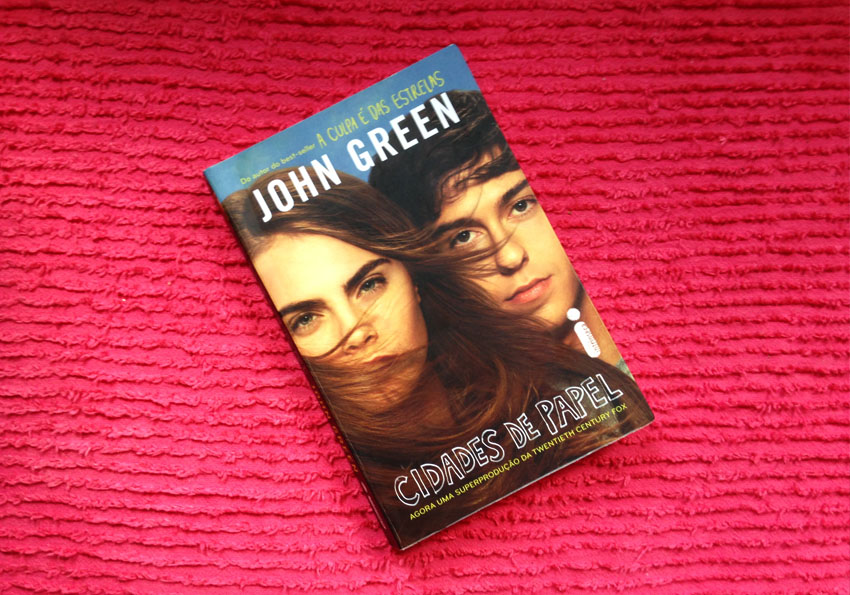

Meus 3 livros favoritos
Oi gente! Tudo bem? Essa categoria aqui no blog não é de segmento de beleza, mas também é uma das coisas que eu amo fazer no meu tempo livre. Eu amo ler, gosto de entrar de cabeça nas histórias e viver os personagens. Romances, aventuras, me apresente a um bom livro e eu vou devorá-lo em uma semana.
Sei que tem muitas meninas que assim como eu adoram um bom livro, gostam de se inspirar nas histórias e trazer os aprendizados para a vida real. Pensando nisso, eu quis trazer os meus 3 livros favoritos, livros nos quais eu me identifiquei muito com os personagens, com o ponto de vista deles e me inspiro neles todos os dias. Vamos lá?
Divergente, Veronica Roth

Tem diversos aspectos que me fazem amar esse livro, e me identificar tanto com a personagem principal: Beatrice Prior. Eu sou muito ligada a questões de liberdade e de descobrir quem eu realmente sou. E a história de Tris trouxe muito à tona esses conceitos pra mim. Ela quer ser livre, porém pra isso tem que deixar sua família. Teve que ser corajosa pra enfrentar tudo na busca de descobrir quem ela é e ainda no meio do caminho conquistar grandes amigos e um amor verdadeiro até a merda toda começar a acontecer e a história te envolver completamente. Uma história de pura adrenalina, coragem e lealdade, pra deixar todo mundo sem fôlego.
Esse livro com certeza é o meu favorito da série e de todos que eu já li. Vale a pena, e recomendo muito a leitura.
"A paz é contida; isso aqui é liberdade." <3
Cidades de Papel, John Green

Eu amo todos os livros que li do John Green pelo fato que poderia ser a história de qualquer um. Poderia ser a minha ou a sua. As histórias e os personagens são tão reais, tão inspiradores... Nesse livro em espacial, eu me identifiquei demais com os personagens. Sou completamente apaixonada pela Margo basicamente pelos mesmos motivos que eu amo a Tris de Divergente. A Margo é completamente desligada dos padrões da sociedade, acha que deve fazer o que tem vontade, que todos os dias devem ser uma aventura e que a vida tem que ser vivida e fazer tudo que te faça feliz. Tem como não amar?
Por outro lado, Quentin, é muito pelo contrário, é super preocupado com a faculdade e o seu futuro. Quer casar, ter filhos, tudo que uma pessoa normal deseja. Mas por uma noite ele cede as aventuras de Margo e tem a melhor noite da sua vida. Mas ele sabe que não pode viver a vida como ela.
Enfim, são duas visões completamente diferentes sobre a vida, que me fez refletir muito em como eu gostaria de viver a minha. Vale muito a pena conhecer esses personagens incríveis e se inspirar nessa história.
"O para sempre é composto de agoras." <3
Não se iluda não, Isabela Freitas
Acho que não tem nenhuma garota que não se identifique com as aventuras amorosas dos livros da Isabela Freitas, né? A gente sempre tentando encontrar o amor, e às vezes acabamos nos entregando pra um completo idiota e saindo com um coração partido. Todas as meninas já passaram por isso e todas têm muita história pra contar. E é disso que se trata o livro Não Se Iluda Não, que além de histórias (ou tragédias) amorosas nos ensina como lidar com certas situações e, muito mais importante que isso, ter amor próprio, não se iludir e não desistir do seu sonho quando tudo parece estar desmoronando.
"Acho que nunca serei uma dessas meninas que parecem ter saído de um comercial de TV. E não tem problema sabe? Porque aprendi a me amar do jeitinho que sou." <3
E os livros favoritos de vocês? Me contem aqui nos comentários, to precisando mesmo conhecer novas histórias.